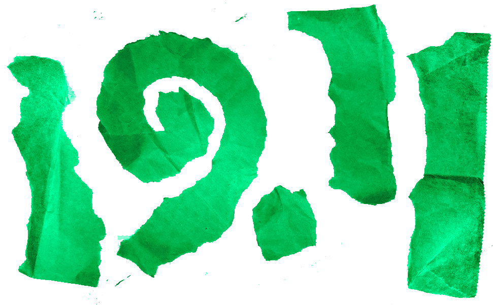
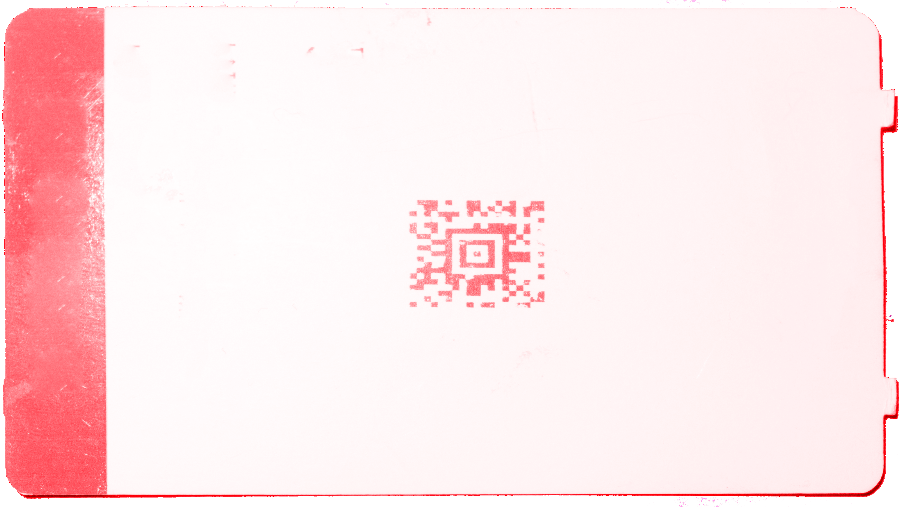

Let's reclaim our space dream!
A lot happened during the 1960s. Wars and walls and tension, but also lava lamps, the Beatles and dancing barefoot. In the meantime, here in Finland, TOKYO was established in the Institute of Industrial Arts in 1961. In between these tumultuous times, people were dreaming of peace, love, freedom, and sometimes of electric sheep. And amidst all this, with an immense excitement, goosebumps and tears in the corner of their eyes, people were dreaming about space.
All over the world, people sought to make space their own through the means available to them. With flying cars and beeping robots, the promise of space travel shaped the identity of an entire generation.
Isn't it so ironic, how 60 years have passed, and the space race is back again, but this time with a bitter taste of privilege, elitism and an excessive amount of CO2. Is it just a party for the elons and jeffs, or are we still invited? Who gets to dream about space in 2021?
It's time to reclaim our space dream. We want to bring back the excitement about the unknown and unexplored, which can make a heart skip a beat. We want to dream as people did 60 years ago. And it doesn't matter, if these dreams are built of cardboard and glitter. Hereby, we officially announce the theme for the long awaited TOKYO Maskerad 2021:
DIY Space Dream.
Edit. Okay so we got some feedback that this text was too romantic and not crazy enough for the biggest party of the year so here's an extra paragraph to get your spirits up:
Let's push the boundaries of what is possible and put those 3D printers that are always collecting dust in Väre to good use. Make friends with a fashion student or two, go to Estonia to get some good fabrics. Fire hazards? Yes. Loud. Multiple outfits in one night. Watch a fashion show, here's a link: www.vogue.com Let's put the met gala to shame within the constraints of a kela-less student budget. See you in November.
Wait..what is Maskerad?
MASKERAD is the name of TOKYO’s annual anniversary party held in late autumn. This year we are celebrating our 60th anniversary! As the name suggest, it is a costume party, the biggest one in Aalto. Maskerad showcases the boldest costume designs and grandest will receive eternal glory and first price of The Maskerad Costume Competition. When crafting your masterpiece costume for with the theme DIY Space Dream, remember sustainability aspect!
19.11.2021
PURISTAMO
Tallberginkatu 1
00180 Helsinki

TICKETS
COMING
COMING
!HAS ENDED!
Maskerad poster competition 2021
!HAS ENDED!
We invite you to participate in Maskerad poster competition!
The posters will be used as one of our main advertising tools for the Maskerad Ball and will be spread far and wide around our campus. Once a Maskerad poster is printed it will remain forever as an archived piece of TOKYO’s history.
Contest rules:
1 Contest duration and right of participation:
The contest begins on the 23rd of October and ends on the 28th of October 2021 at 12pm. All students of Aalto University have the right to participate in the contest.
2 Submissions
Submit your poster proposal via email to TOKYO’s chair at (tokyopj@aalto.fi). The email should include the following:
- Attached PDF of the poster without personal details, as the proposals will be processed anonymously.
- Include your personal information in the email’s message field.
- Write ‘Poster Competition’ as the topic of the email.
3 Requirements for the Poster
Size: A2
Technique: free
Info the poster **must** include:
- Maskerad 2021 (name of the party)
- DIY Space Dream (the theme)
- 19.11.2021 (the date)
- Puristamo, Tallberginkatu 1, 00180 Helsinki (the venue)
- 15€/18€ (ticket price for TOKYO members/nonmembers)
- Place where to add sponsor logos
- Place where to add performing artist names
- TOKYO logo
At the visual evaluation of the proposals, the following are also considered:
- Communicating the theme of the party
- Innovation/uniqueness of the idea
- Overall coolness
4 Choosing the winner
We will setup a link where TOKYO members can vote for their favorite posters from 28.10.21 to 31.10.21. After this, TOKYO board will count the votes and announce the winners. The winner will be notified personally, but the final poster will be revealed later to the general public.
5 Contents of the design work
Once the winner is decided, they will be in charge of finalizing the poster (adding sponsor logos etc.) and designing a post and banner for the Maskerad Ball based on the look of the poster. Sizes for these will be provided by TOKYO.
6 Rewards
For their design work the winner will receive a reward of 150€ and two (2) tickets to the Maskerad party held on Saturday 19.11.2021. The candidates who place second will receive a reward of 50€ and two (2) tickets and the third place will receive two (2) tickets.
7 Schedule
23.10 Competition begins
28.10 Deadline for the submissions 12:00
28-31.10 Online voting
1.11 Winner announced, all contestants are contacted
2.11.-3.11 Poster finalized and printed. FB-banner is completed.
8 Other things to consider
If you have questions regarding the competition, please contact tokyopj@aalto.fi
By participating in this contest you give TOKYO ry all rights to reproduce this piece for any promotional purposes.